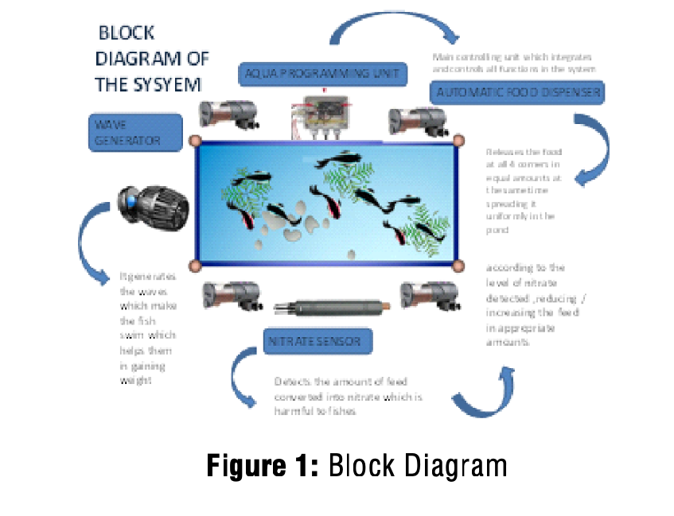
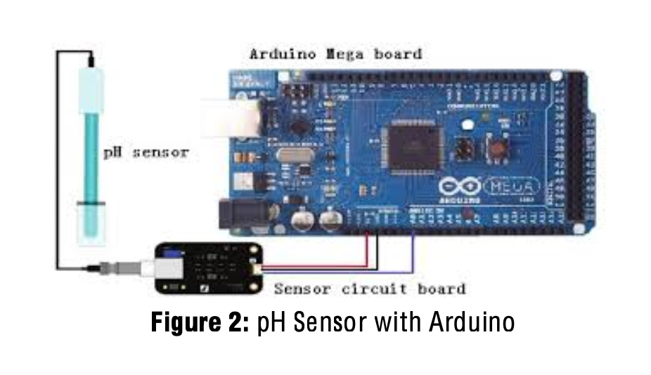
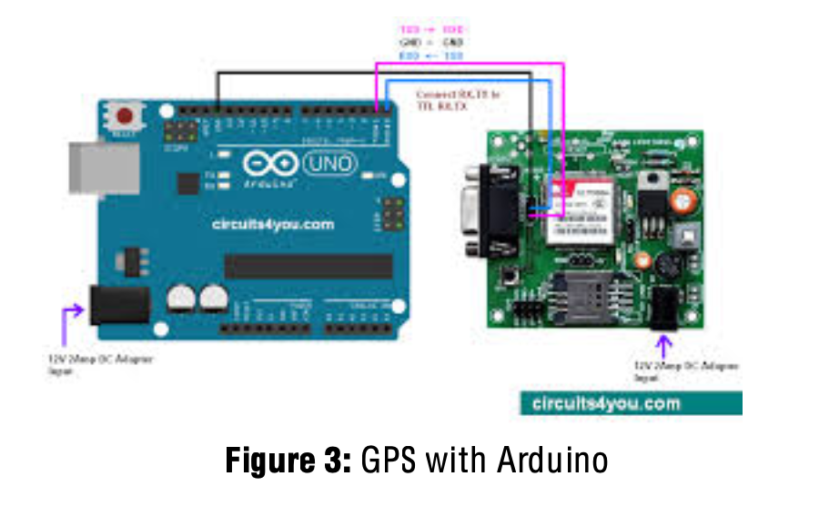
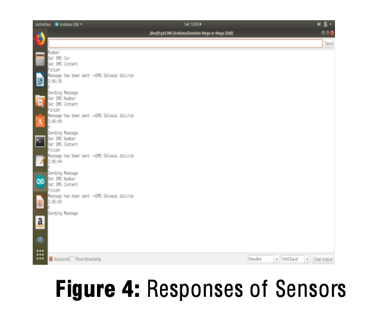
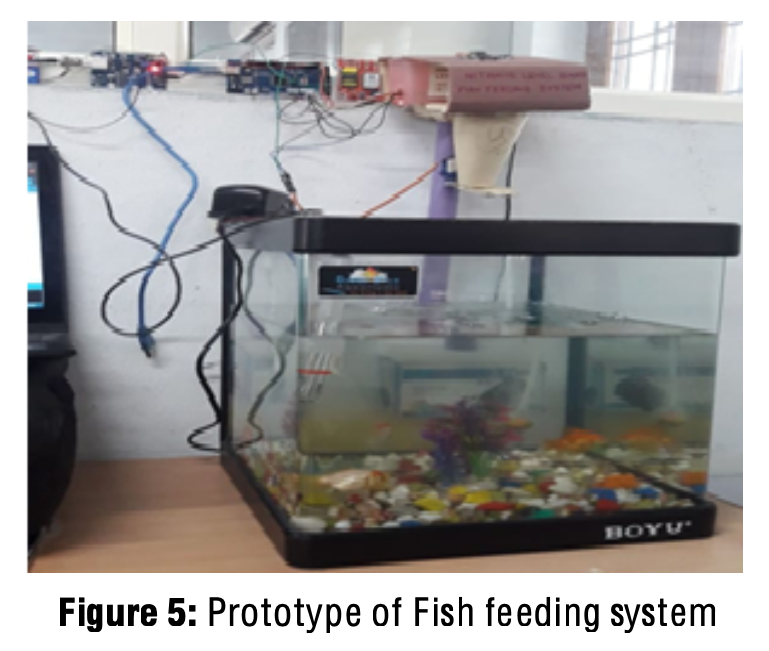

Nitrate Level Based Automatic Fish Feeding System
Rama Lakshmi1, Sai Priyanka2, Akila3, Bhavya Sri4 1-4Department of Electronics and Communication Engineering, BVRIT HYDERABAD College of Engineering for Women, Hyderabad, India;
ABSTRACT
India is the world’s third largest aqua producing country. In India’s GDP Fish production contributes around 1% and in agricultural sector over 5%. All the fishes produced by the India are not from the oceans, it is by the farm, where thousands of acres are used for fish cultivation. A farmer can earn Rs one lakh from an acre annually. To provide cultivation with less labour and continuous monitoring the farm nitrate level[1], automatic fish feeding system is designed. This help’s and support’s the farmers to increase their annual income. Nitrate level in the pond causes harm to fish growth, which need to be monitored regularly and to provide healthy environment for fishes. This system provide the good environment for fishes, which helps them to gain weight and be healthy, which interns helps farmer more profitable and economical.
Keywords: Fish, Aqua, Sensors, IoT, Arduino IDE, Economical, Cultivation.
SAMRIDDHI : A Journal of Physical Sciences, Engineering and Technology, (2020); DOI : 10.18090/samriddhi.v12iS3.9
INTRODUCTION
India being a peninsular country, with its vast coastline holds huge potential for aquaculture. This makes it third-largest producer of fish[2] in the world engaging around 14 million people in this activity. Fisheries sector becomes most massive production and export for the Indian economy. The fisheries sector contributes 5.15% to the agricultural GDP of the country. In 2016-17, the country exported 11,34,948 metric tons of seafood worth Rs. 37,870.90 crores. These statistics clearly show the intensification and tremendous growth of this industry which marked the birth of blue revolution in India.
The prediction, “Fish farms to produce nearly two thirds of India’s fish supply by 2030"[3] shows great scope of this sector in the coming years. To meet such high production, adequate manpower, extension of farms, manual controls and 24 hour human surveillance is quite challenging and stimulates the introduction of new technologies to support the demand in India. Such advancement and improvements in technologies is estimated to increase the production by 30% - 40% and also nullifies the problem of inadequate human resources. On the other hand it has been approximated that the use of scientific methods and proper action taken on time can reduce the loss as to low as 10%-15%. So our objective to provide a scientific approach involving microcontrollers and sensors for aquaculture[4] stands beneficiary for the overall development of aquaculture sector.
PROCEDURE
Since the major problem being faced is the distribution of feed around the pond, our system releases food from 4 different corners of the farm such that it is distributed throughout the pond. For this task to be accomplished, we are using a microcontroller to which 4 food dispensers are connected and placed at four different places in order to cover the whole pond. It is programmed in such a way that a specified amount of food is released automatically at a specified time every day so that the fish gets habituated to a particular time period. As the fish feed is very expensive and any wastage is undesirable, our system consists of highly sensitive nitrate detecting sensors which show the amount of nitrate content in the water[5]. The nitrate content has a threshold limit i.e. if the nitrate percent increases beyond the normal it signals to the fact that there is leftover feed. These nitrate level fluctuations are indicated by the nitrate detecting sensors. So, it is programmed to reduce the amount of feed to be released from the next day.
As provoking the fish to swim across the pond to gain maximum weight is the major priority, we are also installing a wave generator motor to our system (tide level control given) for the fish to swim. To put the limitations faced by a typical fishery system an end. Our idea helps scrutiny the feeding process in aqua-farms[6].
The clock module keeps the timing for the action of food dispensing using servo mechanism and generating waves using DC motor principle at particular time. The PH sensor monitors the nitrate level in the water continuously, if the threshold level is exceeded sends an alert message using GSM to the farmer and if it is detected the nitrate level is too harm the water in the pond is recycled using submersible mini water pump. The Ultrasonic sensor is for monitoring the food level in the food dispenser and if it is empty sends a message to the farmer as “NO MORE STORAGE”. All these sensors are interfaced with Arduino which integrates data from them and applies analytics to share the most valuable information to address the needs.
Arduino
Arduino is an open source hardware and the program for Arduino hardware is written in any programming language with compiler that produce binary machine code for target processor. This open source nature of the Arduino project has facilitated the publication of many free software libraries that the developers use to argument their projects. Arduino mainly supports to interact with the environment with the sensors and actuators.
In this project we used Arduino Mega 2560 as we require more number of GPIO(General purpose input/output) pins. Features of Arduino Mega include:
- Arduino Mega can be programmed in simple C language on the Arduino IDE software which has to be installed on the PC.
- 54 digital input/output pins in which 15 can be used as PWM output pins, 16 analog inputs.
- 4 UARTs (hardware serial ports), a USB connection, a power jack and a reset button.
- It can be directly connected to the computer with a USB cable or power it with a AC-to-DC adapter or battery to get started. It has all the software needed to support the microcontroller.
Before starting with Arduino Mega2560 hardware, Arduino IDE software has to be installed on the corresponding which we are working with from the Arduino software downloads. Once this is done, select whether the Arduino Mega250 is selected in the boards of tools on Arduino window and check whether the port is enabled or not in the tools, if not make some settings which has to be done for supporting on your OS version. Then, install all the libraries we are required for your program header files and then compile your program. Then connect the Arduino Mega2560 to your pc using USB connector and upload your program on to Arduino Mega2560 after completing the connections of the sensors as provided in the block diagram.
pH Sensor With Arduino
pH is a measure of acidity or alkalinity of a solution, the pH scale ranges from 0 to 14. The pH indicates the concentration of hydrogen [H]+ ions present in the certain solutions. This is used to measure the nitrate content in the pond which is harmful to the fishes. The specifications of the pH sensor[7] include :
- Supply Voltage : 5v
- Current : 5-10ma
- Consumption : <= 0.5 W
- Working Temperature : 10 -50 degrees
- Green LED : Power
The connections are made as per the schematic shown in figure 2. Sensor readings are obtained by connecting sensor output to the analog input on the Arduino board, power to Vcc and two GND that actually in the sensor circuit are separated but we can use the same. After making all the connections mentioned above, power is supplied to the board with the help of USB cable by this we get the PH value of the solution to be tested in the serial monitor of the Arduino IDE.
C. GSM WITH ARDUINO
GSM (Global System for Mobile communications) is an international standard for mobile telephones. As it is also a second generation cellular network is also referred as 2G. The Arduino GSM Module allows Arduino to connect to the internet, send and receive text messages, and make voice calls using the GSM library. The specifications of GSM module include :
- Dual-Band : 1800 MHz
- GPRS multi-slot class 10/8
- GPRS mobile station class B
- Supply Voltage range : 3.2-4.8v
- Low power consumption : 1mA
- Operating temperature : -40 t0 +85 degrees
The connections are made as per schematic shown in figure 3. Initially power supply should be given to the GSM with an adapter, next a 2G is connected to the GSM modem in the SIM slot provided on the board and check the availability of network with a few delay in the blinking of green LED on the board. After, connect the GSM modem to the Arduino by connecting Tx and Rx pins on the GSM modem to the any of the two PWM pins on the Arduino board and GND to GND on the Arduino board. After making all the connections mentioned above, connect the Arduino board to the PC using a USB cable. Then if the condition to send a SMS in the program satisfied a will be send to the corresponding mobile number given in the program.
In the booming stage of aquaculture industry, it should be acknowledged that most of the aquatic farms are still at small scale and startup level only. As our project deals with automated feeding system including both self-weighing and disposal of feed, it nullifies the need of humans for these actions. Therefore, reducing capital investment in manual labour’s daily wages and other feeding processes or pre-processing costs. It should also be noticed that most of the people involved in fisheries have average level of education, so any high scientific solutions leads to difficulty in implementation. The simple mechanism in the idea proposed eases the controlling of the setup. So the solution discussed enables to feed the fishes with the choice of amount of feed disposed, to know the fluctuations in food requirement through nitrate sensors and lets the fish swim across the water body due to wave generation, without any human interference [8-10].
RESULT
Automatic fish feeding should be accurate and protective as there will no human intervention there should not be any harm to the fishes and loss to the farmer. The major possibility of the harm through fish feeding system is by the electric wires, so the proper care should be taken with the wires and water. This works accurately with the exact responses expected at all the levels. Few values of these sensors that can be provided are shown in the figure 4 below:
Prototype of this system is developed and tested to show the results. The below figure 5 shows assembled unit:
CONCLUSION
Aqua need automatic device management system which provide economical growth to the country. Nitrate monitoring and automatic feeding helps to maintain pond environment healthy and leads proper weight gain for fishes. Automation is required to manage the cultivation profitable. This system monitors nitrate level generated by two ways, waste released by fishes and waste generated by excess food. One of the most expansive pond product supply is food, that needs close monitoring and manages to reduces wastage based on the analyses. Second fishes generate waste that need to be under control to maintain water quality, continuously recycling water also gives good results. This system provides information to the farmer when to change water by sensing the level of nitrate and amount of food supply needed. If food dispenser is empty system gives messages to farmer and even nitrate level goes high also alert is send.
REFERENCES
- [1] http://smart.ponnod.com/aquaculture/
- [2] Merino, G.; Barange, G.; Blanchard, J.L.; Harle, J.; Holmes, R.; Allen, I.; Allison, E.H.; Badjeck, M.C.; Dulvy, N.K.; Holt, J.; et al. Can marine fisheries and aquaculture meet fish demand from a growing human population in a changing climate? Glob. Environ. Chang. 2012, 22, 795–806.
- [3] https://economictimes.indiatimes.com/news/ economy/agriculture/fish-farms-to-produce- nearly-two-thirds-of-indias-fish-supply-by-2030/ articleshow/65734974.cms?from=mdr
- [4] Sawant, S.; Durbha, S.S.; Jagarlapudi, A. Interoperable agro-meteorological observation and analysis platform for precision agriculture: A case study in citrus crop water requirement estimation. Comput. Electron. Agric. 2007, 138, 175–187.
- [5] Lorena Parra, Sandra Sendra, Laura García and Jaime Lloret (2018). Design and Deployment of Low- Cost Sensors for Monitoring the Water Quality and Fish Behavior in Aquaculture Tanks during the Feeding Process.
- [6] Biswas, A.K.; Seoka, M.; Ueno, K.; Yong, A.S.K.; Biswas, B.K.; Kim, Y.; Takii, K.; Kumai, H. Growth performance and physiological responses in striped knifejaw, Oplegnathus fasciatus, held under different photoperiods. Aquaculture 2008, 279, 42–46.
- [7] Kameoka, S.; Isoda, S.; Hashimoto, A.; Ito, R.; Miyamoto, S.; Wada, G.; Watanabe, N.; Yamakami, T.; Suzuki, K.; Kameoka, T. A Wireless Sensor Network for Growth Environment Measurement and Multi-Band Optical Sensing to Diagnose Tree Vigor. Sensors 2017, 17, 966.
- [8] Rubio, V.C.; Sánchez-Vázquez, F.J.; Madrid, J.A. Effects of salinity on food intake and macronutrient selection in European sea bass. Physiol. Behav. 2005, 85, 333–339.
- [9] Kestemont, P.; Jourdan, S.; Houbart, M.; Mélard, C.; Paspatis, M.; Fontaine, P.; Cuvier, A.; Kentouri, M.; Barasc, E. Size heterogeneity, cannibalism and competition in cultured predatory fish larvae: Biotic and abiotic influences. Aquaculture 2003, 227, 333–356.
- [10] Handcock, R.N.; Swain, D.L.; Bishop-Hurley, G.J.; Patison, K.P.; Wark, T.; Valencia, P.; Corke, P.; O’Neill, C.J. Monitoring animal behaviour and environmental interactions using wireless sensor networks, GPS collars and satellite remote sensing. Sensors 2009, 9, 3586–3603.